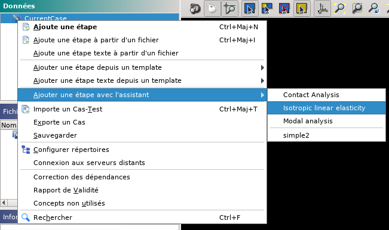

Intégration avec AsterStudy¶
L’application AsterStudy va détecter automatiquement les assistants de calcul placés dans le répertoire de l’utilisateur ~/.config/salome/asterstudy_assistants. La possibilité de configurer l’emplacement des assistants de calcul sera ajoutée dans le futur.
Dans l’application, les assistants de calcul disponibles sont listés dans le menu principal Opération > Ajouter une étape avec un assistant, ou depuis le menu contextuel sur le Cas dans le panneau Données.

Lancement d’un assistant de calcul
En pressant le bouton Fin de l’assistant celui-ci va créer une étape dans l’étude.